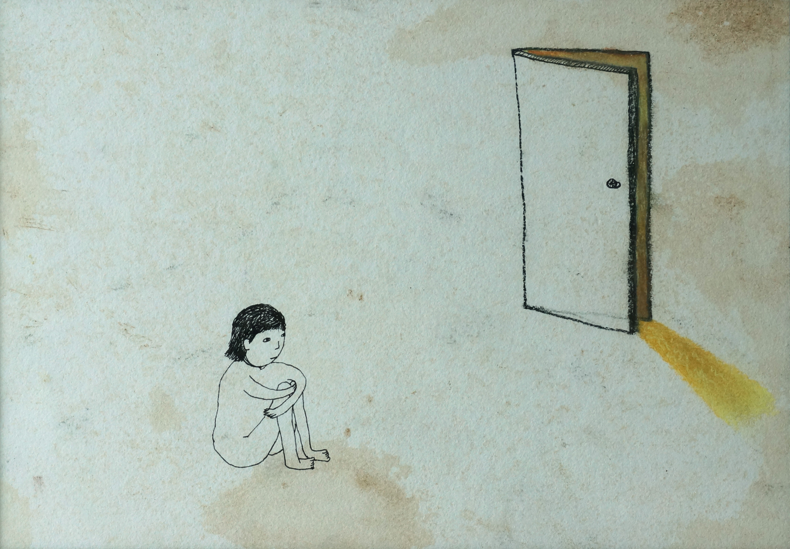
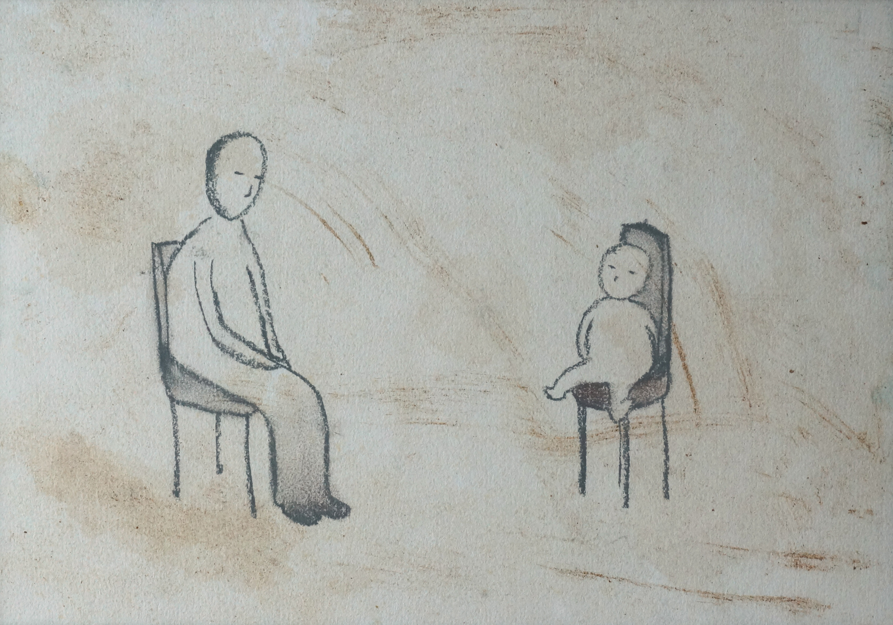

온다리쿠의 소설 『나뭇잎 사이로 비치는 햇살 속을 헤엄치는 물고기』 (원제: 木洩れ日に泳ぐ魚) 중 문장을 발췌하고 그 문장으로부터 비롯된 개인의 상상력과 경험들을 김보람이 드로잉하였다.

<確かに、何もない部屋はとても広く見える。아무것도 없는 방은 휑뎅그렁하니 넓어보였다.> 종이에 혼합재료 210x297

<もうすぐだ。もうすぐ、この波はあなにのところに届く。조금만 기다려라. 조금만 있으면 이 파도는 너에게로 갈 것이다.> 종이에 혼합재료 210x297